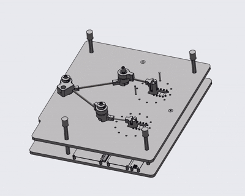
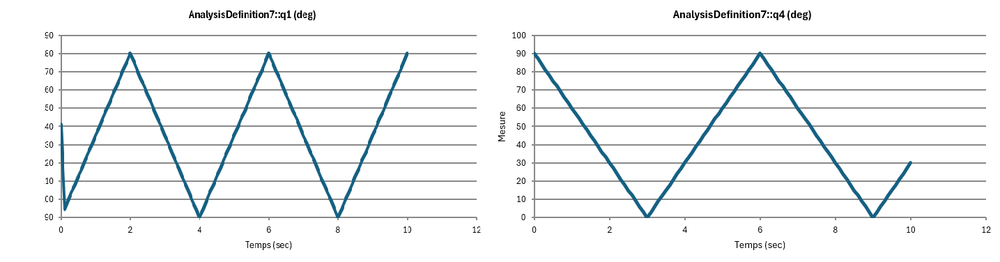

Partie mécanique du projet¶
Objectif¶
L’objectif de la partie mécanique est de disposer d’un modèle géométrique cohérent du pantographe, permettant :
de comprendre la structure mécanique du système
de simuler le mouvement du mécanisme
d’extraire des données de référence (angles, positions)
de comparer ces données avec un modèle géométrique inverse développé en Python
Cette partie constitue le lien entre la mécanique, la modélisation et les tests logiciels.
Récupération des pièces¶
Les pièces mécaniques du pantographe ont été récupérées à partir des ressources du cours, sous forme de fichiers STEP (``.stp``).
Ces fichiers représentent les différentes parties du mécanisme :
base
bras (link1, link2, link3, link4)
effecteur
Import dans Creo et assemblage initial¶
Les pièces ont été importées dans Creo Parametric puis assemblées dans un fichier
d’assemblage (.asm).
Problème rencontré¶
Lors de l’assemblage initial, plusieurs pièces se sont révélées mal dimensionnées et donc incompatibles avec un assemblage fonctionnel du mécanisme.
Cela empêchait un assemblage correct et une simulation cinématique fiable adaptée au modèle géométrique donné.
Correction des pièces et réassemblage¶
Pour résoudre ce problème, de nouvelles pièces ont été recréées dans Creo avec des dimensions cohérentes.
Méthode utilisée :
création de nouvelles pièces aux bonnes dimensions
création des axes/plans nécessaires à l'assemblage dans les anciennes pièces (importées depuis STEP donc n'ont aucune géométrie)
remplacement des anciennes pièces dans l’assemblage
Une fois les nouvelles pièces créées, l’ensemble du mécanisme a été réassemblé afin d’obtenir une structure mécanique fonctionnelle.
Simulation du mécanisme dans Creo¶
L’outil Creo Mechanism a ensuite été utilisé pour simuler le mouvement du pantographe.
Fonctionnalités utilisées :
définition de moteurs sur les articulations
contrôle des angles des moteurs
simulation du mouvement global du mécanisme
Cela permet de :
faire évoluer le pantographe dans son espace de travail
observer le comportement de l’effecteur
mesurer des grandeurs mécaniques pertinentes
Voici ce que l'on a pu observer lors de notre simulation :
{kind=link}
Mesures et extraction des données¶
Pendant la simulation, les grandeurs suivantes ont été mesurées :
angles des moteurs (q1, q4)
positions de l’effecteur (x_eff, y_eff)
Voici les paramètres mesurés :
{kind=link}
{kind=link}
Ces données ont été exportées depuis Creo sous forme d’un tableau Excel.
L’export permet une exploitation externe des données nous permettant de les utiliser directement dans python par exemple pour une comparaison avec des modèles théoriques.
Comparaison avec un modèle géométrique inverse¶
Notre modèle géométrique inverse a été crée dans Matlab. Puis nous avons utilisé le résultat pour en faire une fonction python.
L’objectif est de :
prédire la position de l’effecteur à partir des angles moteurs
comparer ces résultats avec ceux issus de la simulation Creo
Un fichier de test Python a été créé pour comparer :
les données issues de Creo (référence)
les résultats du modèle géométrique inverse
Résultat et limites¶
La comparaison n’a pas permis d’obtenir une concordance satisfaisante entre la simulation mécanique Creo et le modèle géométrique inverse Python.
Le test Python associé n’est pas fonctionnel à ce stade.
Cause identifiée :
le modèle géométrique inverse n’est pas encore correct
certaines hypothèses géométriques sont incomplètes ou erronées
Cette difficulté a néanmoins permis :
d’identifier les limites du modèle théorique
de mettre en évidence l’intérêt de confronter simulation et calcul
Lien avec le reste du projet¶
La partie mécanique alimente directement :
la compréhension globale du pantographe
la définition des domaines de travail
les tests logiciels
la réflexion sur l’URDF et la visualisation
Même si le modèle inverse n’est pas finalisé, le travail réalisé fournit une base solide pour améliorer la cohérence entre mécanique, modélisation et logiciel.